Overview
rayshader is an open source package for producing 2D and 3D data visualizations in R. rayshader uses elevation data in a base R matrix and a combination of raytracing, hillshading algorithms, and overlays to generate stunning 2D and 3D maps. In addition to maps, rayshader also allows the user to translate ggplot2 objects into beautiful 3D data visualizations.
The models can be rotated and examined interactively or the camera movement can be scripted to create animations. Scenes can also be rendered using a high-quality pathtracer, rayrender. The user can also create a cinematic depth of field post-processing effect to direct the user’s focus to important regions in the figure. The 3D models can also be exported to a 3D-printable format with a built-in STL export function, and can be exported to an OBJ file.
Installation
# To install the latest version from Github:
# install.packages("devtools")
devtools::install_github("tylermorganwall/rayshader")On Ubuntu, the following libraries are required:
Functions
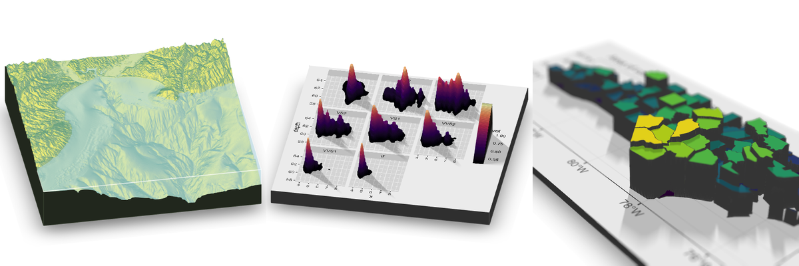
Rayshader has seven functions related to mapping:
-
ray_shade()uses user specified light directions to calculate a global shadow map for an elevation matrix. By default, this also scales the light intensity at each point by the dot product of the mean ray direction and the surface normal (also implemented in functionlamb_shade, this can be turned off by settinglambert=FALSE. -
sphere_shade()maps an RGB texture to a hillshade by spherical mapping. A texture can be generated with thecreate_texturefunction, or loaded from an image.sphere_shadealso includes 7 built-in palettes: “imhof1”, “imhof2”, “imhof3”, imhof4”, “desert”, “bw”, “unicorn”. -
ambient_shade()creates an ambient occlusion shadow layer, darkening areas that have less scattered light from the atmosphere. This results in valleys being darker than flat areas and ridges. -
texture_shade()calculates a shadow for each point on the surface using the method described by Leland Brown in “Texture Shading: A New Technique for Depicting Terrain Relief.” -
height_shade()calculates a color for each point on the surface using a direct elevation-to-color mapping. -
lamb_shade()uses a single user specified light direction to calculate a local shadow map based on the dot product between the surface normal and the light direction for an elevation matrix. -
add_shadow()takes two of the shadow maps above and combines them, scaling the second one (or, if the second is an RGB array, the matrix) as specified by the user. -
add_overlay()takes a 3 or 4-layer RGB/RGBA array and overlays it on the current map. If the map includes transparency, this is taken into account when overlaying the image. Otherwise, the user can specify a single color that will be marked as completely transparent, or set the full overlay as partly transparent. -
create_texture()programmatically creates texture maps given five colors: a highlight, a shadow, a left fill light, a right fill light, and a center color for flat areas. The user can also optionally specify the colors at the corners, butcreate_texturewill interpolate those if they aren’t given.
Rayshader also has functions to add water and generate overlays:
-
detect_water()uses a flood-fill algorithm to detect bodies of water of a user-specified minimum area. -
add_water()uses the output ofdetect_waterto add a water color to the map. The user can input their own color, or pass the name of one of the pre-defined palettes fromsphere_shadeto get a matching hue. -
generate_altitude_overlay()uses a hillshade and the height map to generate a semi-transparent hillshade whose transparency varies with altitude. -
generate_compass_overlay()generates an overlay with a compass. -
generate_contour_overlay()calculates and returns an overlay of contour lines. -
generate_label_overlay()this uses themaptools::placeLabel()function to generate labels for the given scene. Either use ansfobject or manually specify the x/y coordinates and label. -
generate_line_overlay()generates an overlay of lines, using ansfobject with LINESTRING geometry. -
generate_point_overlay()generates an overlay of points, using ansfobject with POINT geometry. -
generate_polygon_overlay()generates an overlay of points, using ansfobject with POLYGON geometry. -
generate_scalebar_overlay()this function creates an overlay with a scale bar of a user-specified length. It uses the coordinates of the map (specified by passing an extent) and then creates a scale bar at a specified x/y proportion across the map. If the map is not projected (i.e. is in lat/long coordinates) this function will use thegeospherepackage to create a scale bar of the proper length. -
generate_waterline_overlay()generates a semi-transparent waterline overlay to layer onto an existing map using a height map or a boolean matrix.
Also included are functions to add additional effects and information to your 3D visualizations:
-
render_highquality()renders in the scene with a built-in pathtracer, powered by the rayrender package. Use this for high-quality maps with realistic light transport. -
render_depth()generates a depth of field effect for the 3D map. The user can specify the focal distance, focal length, and f-stop of the camera, as well as aperture shape and bokeh intensity. This either plots the image to the local device, or saves it to a file if given a filename. -
render_label()adds a text label to thexandycoordinate of the map at a specified altitudez(in units of the matrix). The altitude can either be specified relative to the elevation at that point (the default), or absolutely. -
render_water()adds a 3D tranparent water layer to 3D maps, after the rgl device has already been created. This can either add to a map that does not already have a water layer, or replace an existing water layer on the map. -
render_compass()places a compass on the map in 3D. -
render_path()adds a 3D path to the current scene, using latitude/longitude or coordinates in the reference system defined by the extent object. If no altitude is provided, the path will be elevated a constant offset above the heightmap. -
render_points()Adds 3D points to the current scene, using latitude/longitude or coordinates in the reference system defined by the extent object. If no altitude is provided, the points will be elevated a constant offset above the heightmap. -
render_polygons()Adds 3D polygons to the current scene, using latitude/longitude or coordinates in the reference system defined by the extent object. -
render_scalebar()places a scalebar on the map in 3D.
And several helper functions for converting rasters to matrices:
-
raster_to_matrix()converts arasterobjects into a matrix. -
resize_matrix()resizes a matrix (preserving contents) by specifying the desired output dimensions or a scaling factor.
And four functions to display and save your visualizations:
-
plot_map()Plots the current map. Accepts either a matrix or an array. -
write_png()Writes the current map to disk with a user-specified filename. -
plot_3d()Creates a 3D map, given a texture and an elevation matrix. You can customize the appearance of the map, as well as add a user-defined water level. -
render_camera()Changes the camera orientation. -
render_snapshot()Saves an image of the current 3D view to disk (if given a filename), or plots the 3D view to the current device (useful for including images in R Markdown files). -
render_movie()Creates and saves a mp4/gif file of the camera rotating around the 3D scene by either using a built-in orbit or by using one provided by the user.
Finally, rayshader has a single function to generate 3D plots using ggplot2 objects:
-
plot_gg()Takes a ggplot2 object (or a list of two ggplot2 objects) and uses the fill or color aesthetic to transform the plot into a 3D surface. You can pass any of the arguments used to specify the camera and the background/shadow colors inplot_3d(), and manipulate the displayed 3D plot usingrender_camera()andrender_depth().
Usage
Rayshader can be used for two purposes: both creating hillshaded maps and 3D data visualizations plots. First, let’s look at rayshader’s mapping capabilities. For the latter, scroll below.
Mapping with rayshader
library(rayshader)
#Here, I load a map with the raster package.
loadzip = tempfile()
download.file("https://tylermw.com/data/dem_01.tif.zip", loadzip)
localtif = raster::raster(unzip(loadzip, "dem_01.tif"))
unlink(loadzip)
#And convert it to a matrix:
elmat = raster_to_matrix(localtif)
#We use another one of rayshader's built-in textures:
elmat |>
sphere_shade(texture = "desert") |>
plot_map()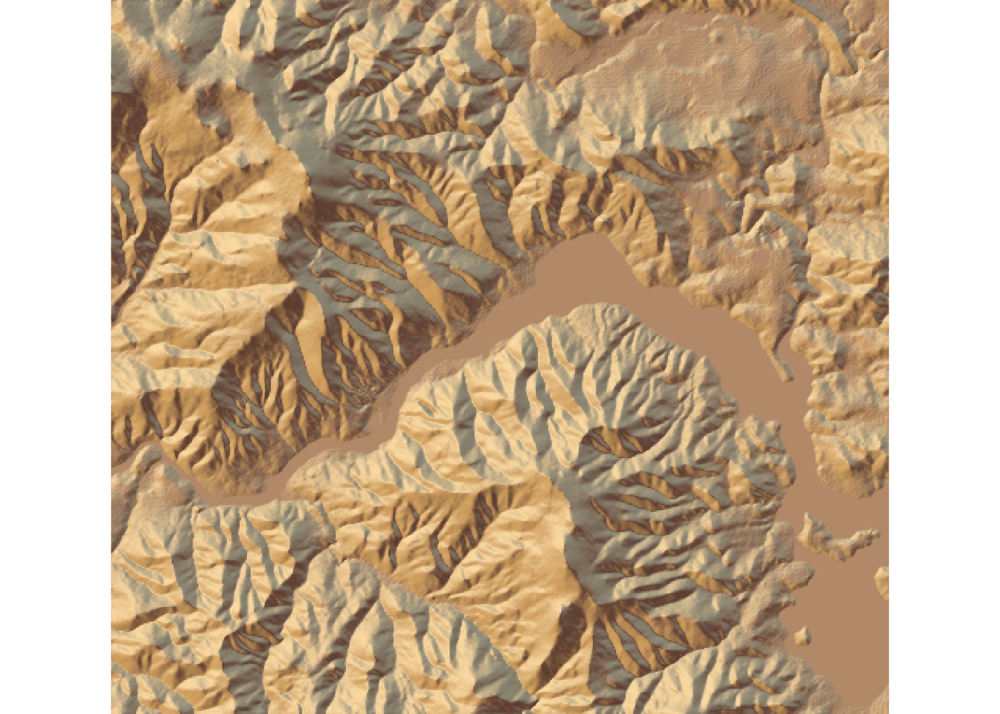
#sphere_shade can shift the sun direction:
elmat |>
sphere_shade(sunangle = 45, texture = "desert") |>
plot_map()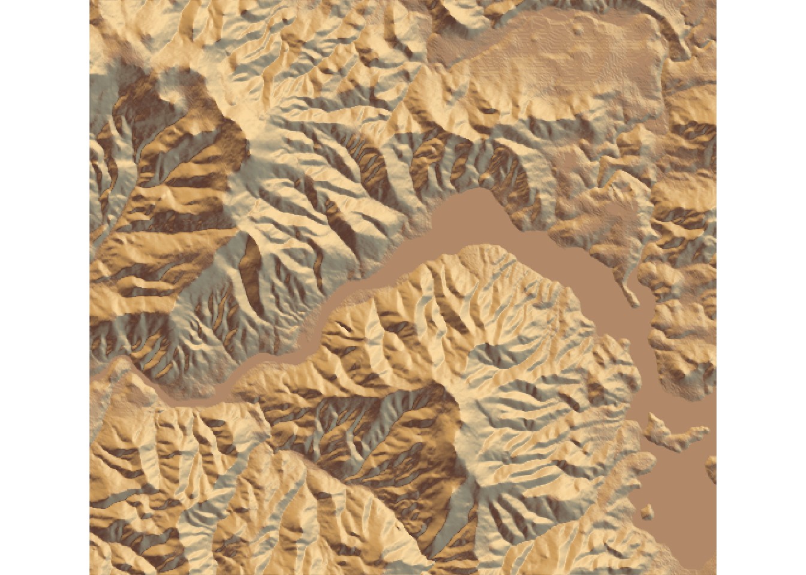
#detect_water and add_water adds a water layer to the map:
elmat |>
sphere_shade(texture = "desert") |>
add_water(detect_water(elmat), color = "desert") |>
plot_map()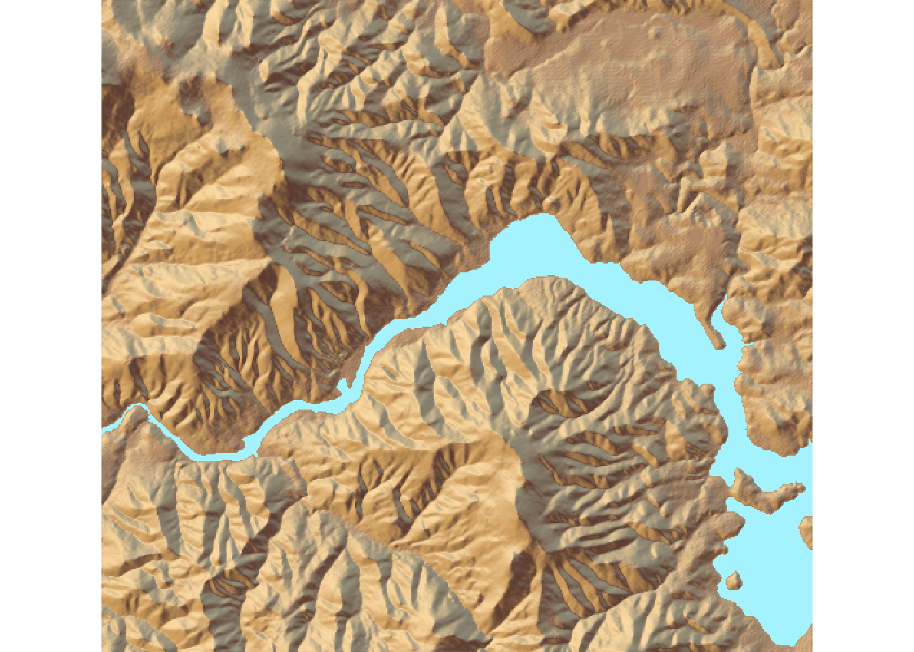
#And we can add a raytraced layer from that sun direction as well:
elmat |>
sphere_shade(texture = "desert") |>
add_water(detect_water(elmat), color = "desert") |>
add_shadow(ray_shade(elmat), 0.5) |>
plot_map()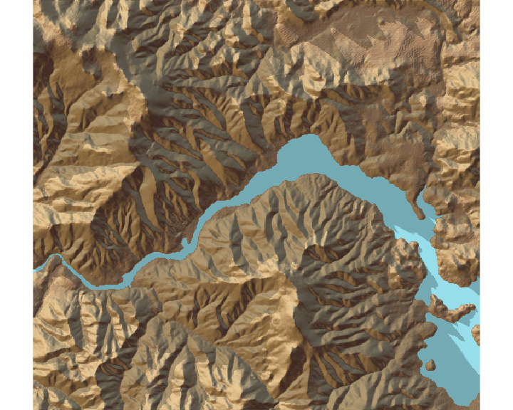
#And here we add an ambient occlusion shadow layer, which models
#lighting from atmospheric scattering:
elmat |>
sphere_shade(texture = "desert") |>
add_water(detect_water(elmat), color = "desert") |>
add_shadow(ray_shade(elmat), 0.5) |>
add_shadow(ambient_shade(elmat, maxsearch = 30), 0) |>
plot_map()
Rayshader also supports 3D mapping by passing a texture map (either external or one produced by rayshader) into the plot_3d function.
elmat |>
sphere_shade(texture = "desert") |>
add_water(detect_water(elmat), color = "desert") |>
add_shadow(ray_shade(elmat, zscale = 3), 0.3) |>
add_shadow(ambient_shade(elmat), 0) |>
plot_3d(
elmat,
zscale = 10,
fov = 0,
theta = 135,
zoom = 0.75,
phi = 45,
windowsize = c(1000, 800)
)
Sys.sleep(0.2)
render_snapshot()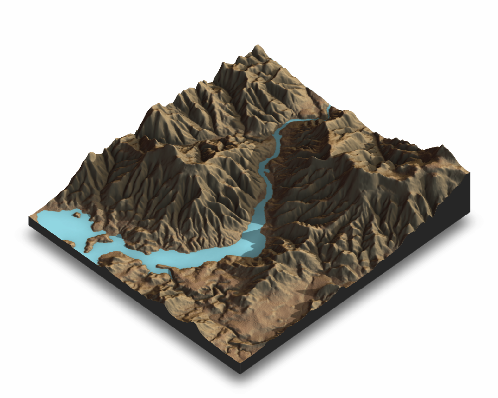
You can add a scale bar, as well as a compass using render_scalebar() and render_compass()
render_camera(fov = 0, theta = 60, zoom = 0.75, phi = 45)
render_scalebar(
limits = c(0, 5, 10),
label_unit = "km",
position = "W",
y = 50,
scale_length = c(0.33, 1)
)
render_compass(position = "E")
render_snapshot(clear = TRUE)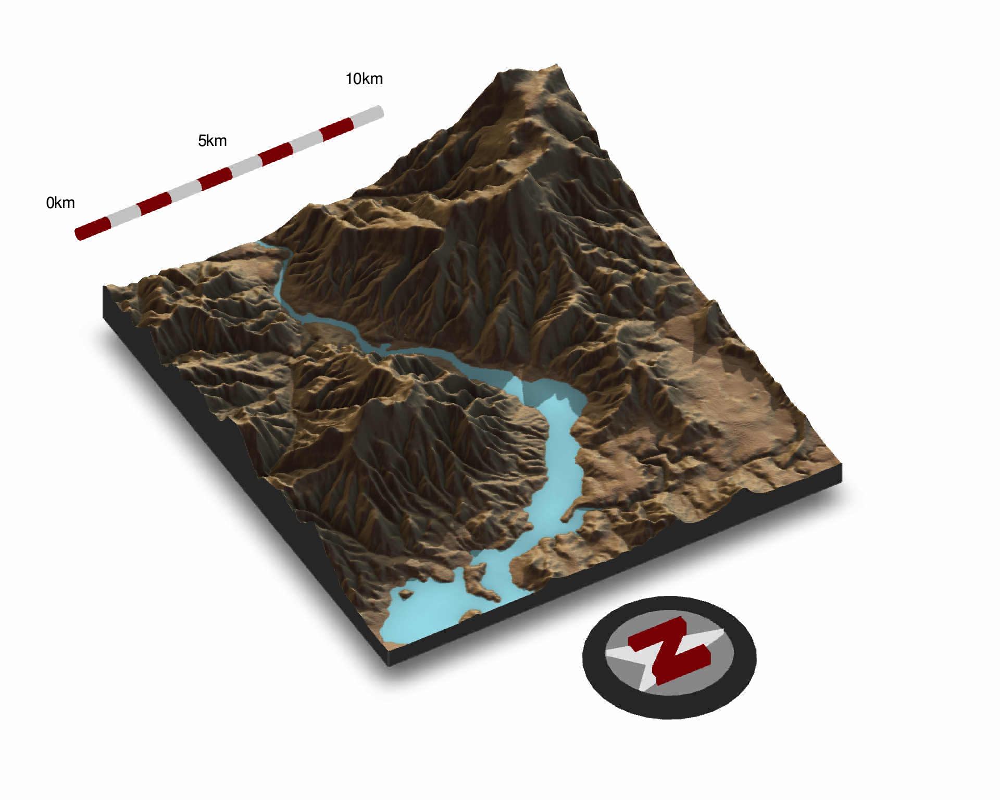
Rayshader also includes the option to add a procedurally-generated cloud layer (and optionally, shadows):
elmat |>
sphere_shade(texture = "desert") |>
add_water(detect_water(elmat), color = "lightblue") |>
add_shadow(
cloud_shade(
elmat,
zscale = 10,
start_altitude = 500,
end_altitude = 1000,
),
0
) |>
plot_3d(
elmat,
zscale = 10,
fov = 0,
theta = 135,
zoom = 0.75,
phi = 45,
windowsize = c(1000, 800),
background = "darkred"
)
render_camera(theta = 20, phi = 40, zoom = 0.64, fov = 56)
render_clouds(
elmat,
zscale = 10,
start_altitude = 800,
end_altitude = 1000,
attenuation_coef = 5,
sun_altitude = 10,
clear_clouds = T
)
render_snapshot(clear = TRUE)
rgl::rgl.clear()## Warning in rgl::rgl.clear(): 'rgl::rgl.clear' is deprecated.
## Use 'clear3d' instead.
## See help("Deprecated")These clouds can be customized:
elmat |>
sphere_shade(texture = "desert") |>
add_water(detect_water(elmat), color = "lightblue") |>
add_shadow(
cloud_shade(
elmat,
zscale = 10,
start_altitude = 500,
end_altitude = 700,
sun_altitude = 45,
attenuation_coef = 2,
offset_y = 300,
cloud_cover = 0.55,
frequency = 0.01,
scale_y = 3,
fractal_levels = 32
),
0
) |>
plot_3d(
elmat,
zscale = 10,
fov = 0,
theta = 135,
zoom = 0.75,
phi = 45,
windowsize = c(1000, 800),
background = "darkred"
)
render_camera(theta = 125, phi = 22, zoom = 0.47, fov = 60)
render_clouds(
elmat,
zscale = 10,
start_altitude = 500,
end_altitude = 700,
sun_altitude = 45,
attenuation_coef = 2,
offset_y = 300,
cloud_cover = 0.55,
frequency = 0.01,
scale_y = 3,
fractal_levels = 32,
clear_clouds = T
)
render_snapshot(clear = TRUE)
You can also render using the built-in pathtracer, powered by rayrender. Simply replace render_snapshot() with render_highquality(). When render_highquality() is called, there’s no need to pre-compute the shadows with any of the _shade() functions, so we remove those:
elmat |>
sphere_shade(texture = "desert") |>
add_water(detect_water(elmat), color = "desert") |>
plot_3d(
elmat,
zscale = 10,
fov = 0,
theta = 72,
zoom = 0.68,
phi = 40,
windowsize = c(1000, 800)
)
render_scalebar(
limits = c(0, 5, 10),
label_unit = "km",
position = "W",
y = 50,
scale_length = c(0.33, 1)
)
render_compass(position = "E")
Sys.sleep(0.2)
render_highquality(samples = 16, scale_text_size = 24, clear = TRUE)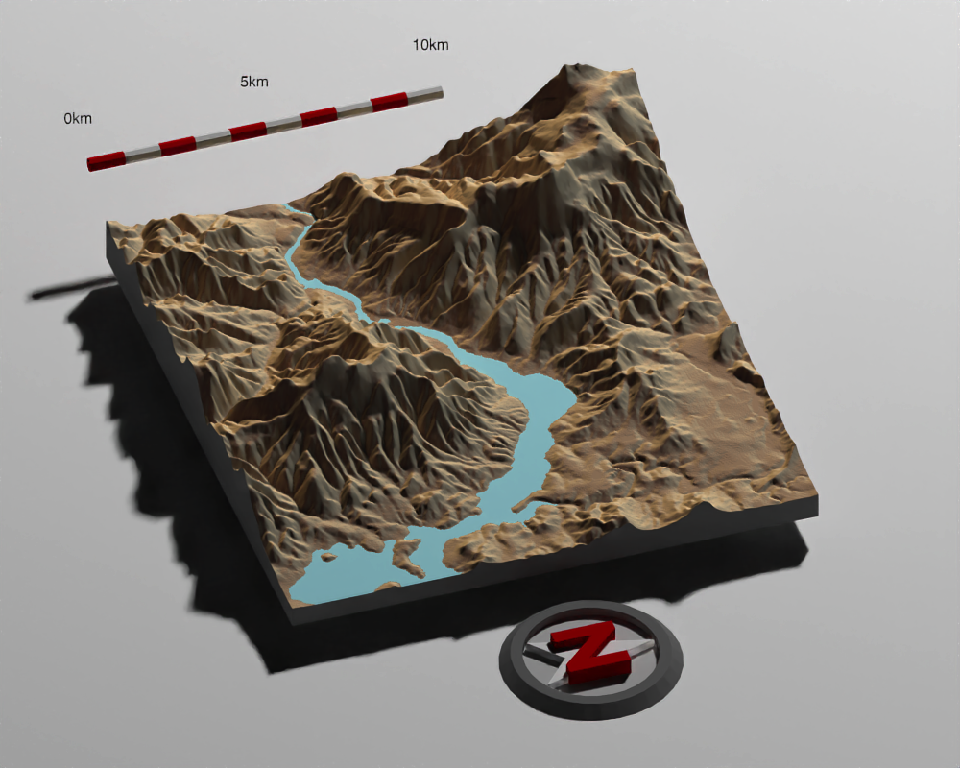
You can also easily add a water layer by setting water = TRUE in plot_3d() (and setting waterdepth if the water level is not 0), or by using the function render_water() after the 3D map has been rendered. You can customize the appearance and transparancy of the water layer via function arguments. Here’s an example using bathymetric/topographic data of Monterey Bay, CA (included with rayshader):
montshadow = ray_shade(montereybay, zscale = 50, lambert = FALSE)
montamb = ambient_shade(montereybay, zscale = 50)
montereybay |>
sphere_shade(zscale = 10, texture = "imhof1") |>
add_shadow(montshadow, 0.5) |>
add_shadow(montamb, 0) |>
plot_3d(
montereybay,
zscale = 50,
fov = 0,
theta = -45,
phi = 45,
windowsize = c(1000, 800),
zoom = 0.75,
water = TRUE,
waterdepth = 0,
wateralpha = 0.5,
watercolor = "lightblue",
waterlinecolor = "white",
waterlinealpha = 0.5
)
Sys.sleep(0.2)
render_snapshot(clear = TRUE)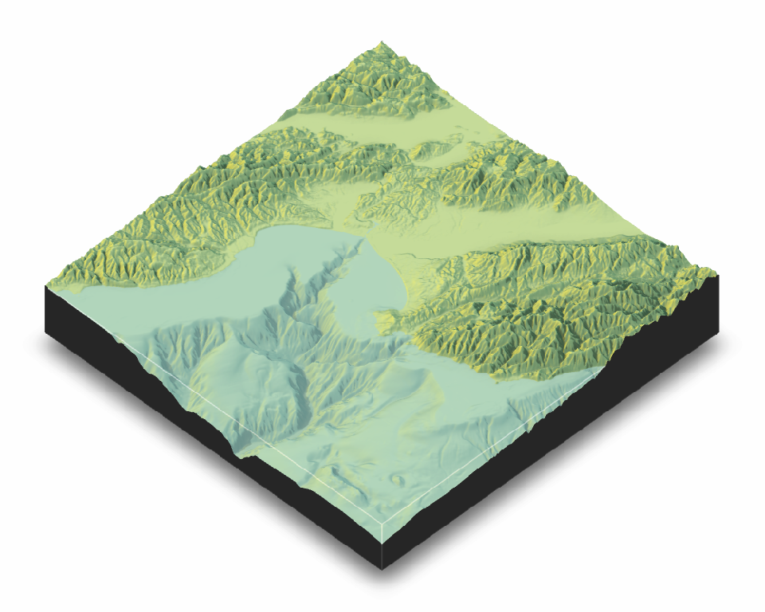
Water is also supported in render_highquality(). We load the rayrender package to change the ground material to include a checker pattern. By default, the camera looks at the origin, but we shift it down slightly to center the map.
##
## Attaching package: 'rayrender'
## The following object is masked from 'package:rayshader':
##
## run_documentation
## The following object is masked from 'package:rgl':
##
## text3d
montereybay |>
sphere_shade(zscale = 10, texture = "imhof1") |>
plot_3d(
montereybay,
zscale = 50,
fov = 70,
theta = 270,
phi = 30,
windowsize = c(1000, 800),
zoom = 0.6,
water = TRUE,
waterdepth = 0,
wateralpha = 0.5,
watercolor = "#233aa1",
waterlinecolor = "white",
waterlinealpha = 0.5
)
Sys.sleep(0.2)
render_highquality(
lightdirection = c(-45, 45),
lightaltitude = 30,
samples = 16,
camera_lookat = c(0, -50, 0),
ground_material = diffuse(
color = "grey50",
checkercolor = "grey20",
checkerperiod = 100
),
clear = TRUE
)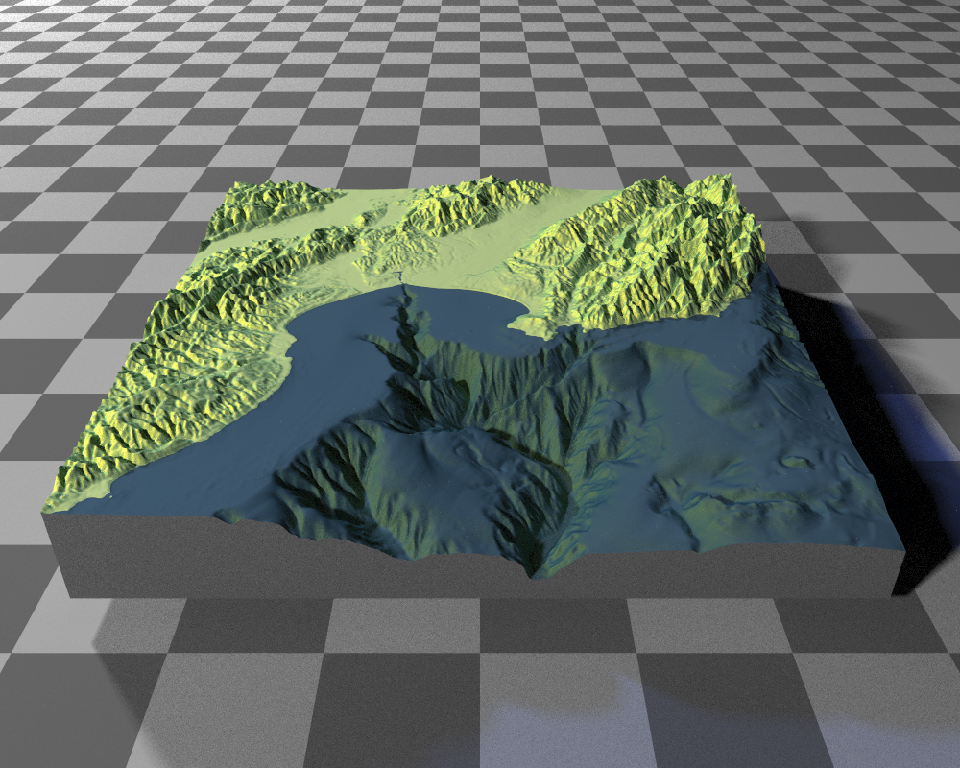
Rayshader also has map shapes other than rectangular included c("hex", "circle"), and you can customize the map into any shape you want by setting the areas you do not want to display to NA.
par(mfrow = c(1, 2))
montereybay |>
sphere_shade(zscale = 10, texture = "imhof1") |>
add_shadow(montshadow, 0.5) |>
add_shadow(montamb, 0) |>
plot_3d(
montereybay,
zscale = 50,
fov = 0,
theta = -45,
phi = 45,
windowsize = c(1000, 800),
zoom = 0.6,
water = TRUE,
waterdepth = 0,
wateralpha = 0.5,
watercolor = "lightblue",
waterlinecolor = "white",
waterlinealpha = 0.5,
baseshape = "circle"
)
render_snapshot(clear = TRUE)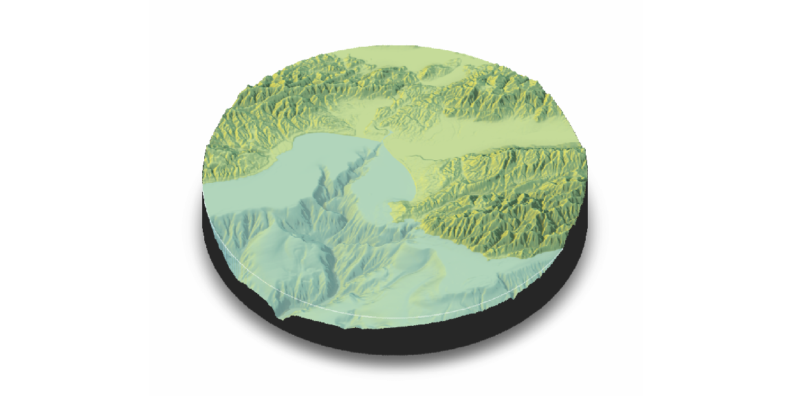
montereybay |>
sphere_shade(zscale = 10, texture = "imhof1") |>
add_shadow(montshadow, 0.5) |>
add_shadow(montamb, 0) |>
plot_3d(
montereybay,
zscale = 50,
fov = 0,
theta = -45,
phi = 45,
windowsize = c(1000, 800),
zoom = 0.6,
water = TRUE,
waterdepth = 0,
wateralpha = 0.5,
watercolor = "lightblue",
waterlinecolor = "white",
waterlinealpha = 0.5,
baseshape = "hex"
)
render_snapshot(clear = TRUE)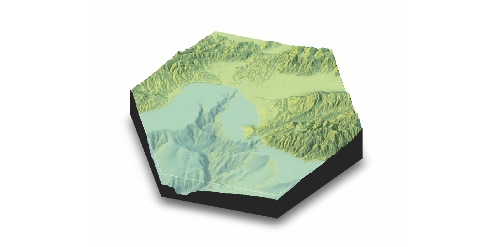
Adding text labels is done with the render_label() function, which also allows you to customize the line type, color, and size along with the font:
montereybay |>
sphere_shade(zscale = 10, texture = "imhof1") |>
add_shadow(montshadow, 0.5) |>
add_shadow(montamb, 0) |>
plot_3d(
montereybay,
zscale = 50,
fov = 0,
theta = -100,
phi = 30,
windowsize = c(1000, 800),
zoom = 0.6,
water = TRUE,
waterdepth = 0,
waterlinecolor = "white",
waterlinealpha = 0.5,
wateralpha = 0.5,
watercolor = "lightblue"
)
render_label(
montereybay,
x = 350,
y = 160,
z = 1000,
zscale = 50,
text = "Moss Landing",
textsize = 2,
linewidth = 5
)
render_label(
montereybay,
x = 220,
y = 70,
z = 7000,
zscale = 50,
text = "Santa Cruz",
textcolor = "darkred",
linecolor = "darkred",
textsize = 2,
linewidth = 5
)
render_label(
montereybay,
x = 300,
y = 270,
z = 4000,
zscale = 50,
text = "Monterey",
dashed = TRUE,
textsize = 2,
linewidth = 5
)
render_label(
montereybay,
x = 50,
y = 270,
z = 1000,
zscale = 50,
textcolor = "white",
linecolor = "white",
text = "Monterey Canyon",
relativez = FALSE,
textsize = 2,
linewidth = 5
)
Sys.sleep(0.2)
render_snapshot(clear = TRUE)
Labels are also supported in render_highquality():
render_highquality(
samples = 16,
line_radius = 1,
text_size = 36,
text_offset = c(0, 12, 0),
clear = TRUE
)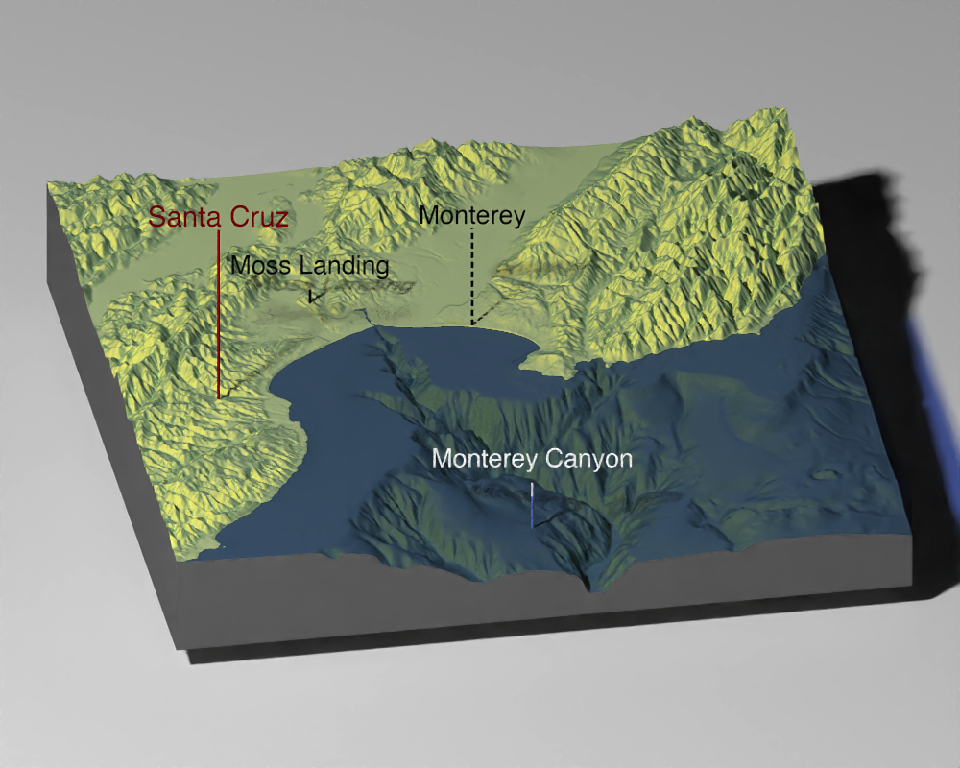
3D paths, points, and polygons can be added directly from spatial objects from the sf library:
Polygons:
montereybay |>
sphere_shade(texture = "desert") |>
add_shadow(ray_shade(montereybay, zscale = 50)) |>
plot_3d(
montereybay,
water = TRUE,
windowsize = c(1000, 800),
watercolor = "dodgerblue"
)
render_camera(theta = -60, phi = 60, zoom = 0.85, fov = 30)
#We will apply a negative buffer to create space between adjacent polygons:
sf::sf_use_s2(FALSE)
mont_county_buff = sf::st_simplify(
sf::st_buffer(monterey_counties_sf, -0.003),
dTolerance = 0.004
)
render_polygons(
mont_county_buff,
extent = attr(montereybay, "extent"),
data_column_top = "ALAND",
scale_data = 300 / (2.6E9),
color = "chartreuse4",
parallel = TRUE
)
render_highquality(samples = 16)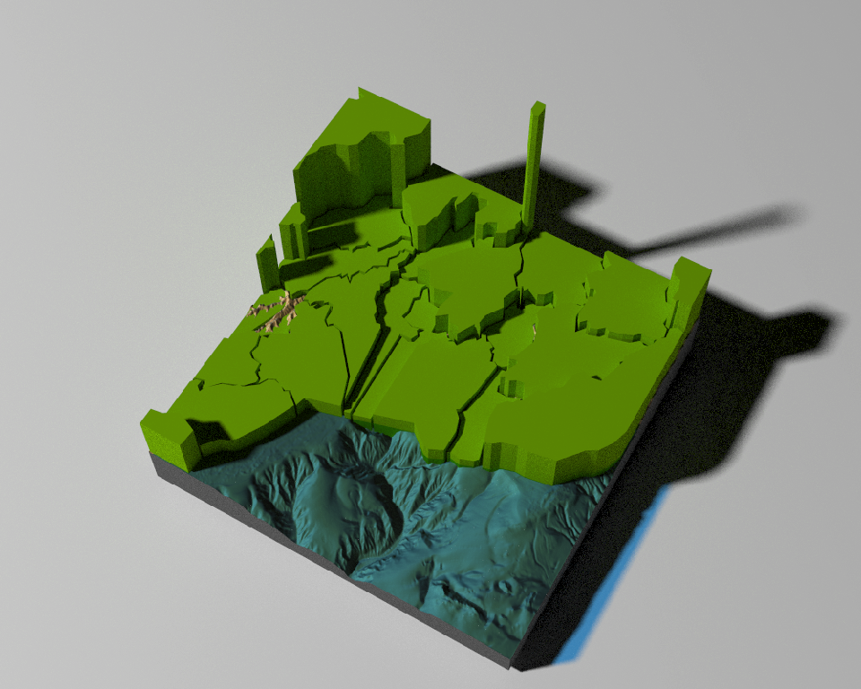
render_polygons(clear_previous = TRUE)
render_camera(theta = 225, phi = 30, zoom = 0.37, fov = 48)Points:
moss_landing_coord = c(36.806807, -121.793332)
x_vel_out = -0.0018 + rnorm(1000)[1:300] / 1000
y_vel_out = rnorm(1000)[1:300] / 100
z_out = c(
seq(0, 2000, length.out = 180),
seq(2000, 0, length.out = 10),
seq(0, 2000, length.out = 100),
seq(2000, 0, length.out = 10)
)
bird_track_lat = list()
bird_track_long = list()
bird_track_lat[[1]] = moss_landing_coord[1]
bird_track_long[[1]] = moss_landing_coord[2]
for (i in 2:300) {
bird_track_lat[[i]] = bird_track_lat[[i - 1]] + y_vel_out[i]
bird_track_long[[i]] = bird_track_long[[i - 1]] + x_vel_out[i]
}
render_points(
extent = attr(montereybay, "extent"),
lat = unlist(bird_track_lat),
long = unlist(bird_track_long),
altitude = z_out,
zscale = 50,
color = "red",
clear_previous = TRUE
)
render_highquality(point_radius = 0.5, samples = 16)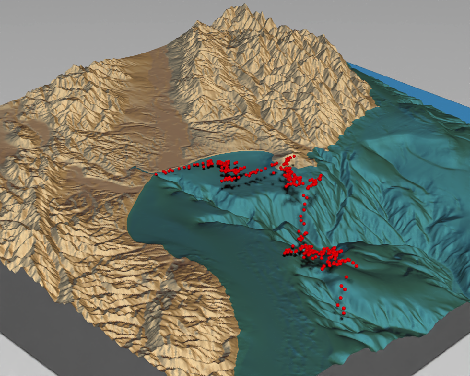
render_points(clear_previous = TRUE)Paths:
render_path(
extent = attr(montereybay, "extent"),
lat = unlist(bird_track_lat),
long = unlist(bird_track_long),
altitude = z_out,
zscale = 50,
color = "white",
antialias = TRUE
)
render_highquality(
line_radius = 0.5,
samples = 16,
clear = TRUE,
use_extruded_paths = TRUE
)## Warning in mesh3d_model(mesh, x = x, y = y, z = z, override_material = TRUE, :
## material set as vertex color but no texture or bump map passed--ignoring mesh3d
## material.
You can also apply a post-processing effect to the 3D maps to render maps with depth of field with the render_depth() function:
elmat |>
sphere_shade(texture = "desert") |>
add_water(detect_water(elmat), color = "desert") |>
add_shadow(ray_shade(elmat, zscale = 3), 0.5) |>
add_shadow(ambient_shade(elmat), 0) |>
plot_3d(
elmat,
zscale = 10,
fov = 30,
theta = -225,
phi = 25,
windowsize = c(1000, 800),
zoom = 0.3
)
Sys.sleep(0.2)
render_depth(focallength = 800, clear = TRUE) #THIS NEEDS FIXING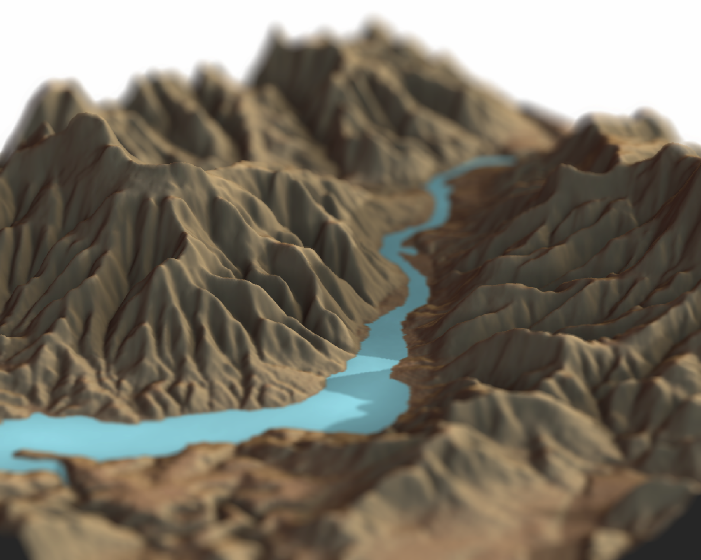
3D plotting with rayshader and ggplot2
Rayshader can also be used to make 3D plots out of ggplot2 objects using the plot_gg() function. Here, I turn a color density plot into a 3D density plot. plot_gg() detects that the user mapped the fill aesthetic to color and uses that information to project the figure into 3D.
##
## Attaching package: 'ggplot2'
## The following object is masked from 'package:rayrender':
##
## arrow
ggdiamonds = ggplot(diamonds) +
stat_density_2d(
aes(x = x, y = depth, fill = stat(nlevel)),
geom = "polygon",
n = 200,
bins = 50,
contour = TRUE
) +
facet_wrap(clarity ~ .) +
scale_fill_viridis_c(option = "A")
par(mfrow = c(1, 2))
plot_gg(ggdiamonds, width = 5, height = 5, raytrace = FALSE, preview = TRUE)## Warning: `stat(nlevel)` was deprecated in ggplot2 3.4.0.
## ℹ Please use `after_stat(nlevel)` instead.
## This warning is displayed once every 8 hours.
## Call `lifecycle::last_lifecycle_warnings()` to see where this warning was
## generated.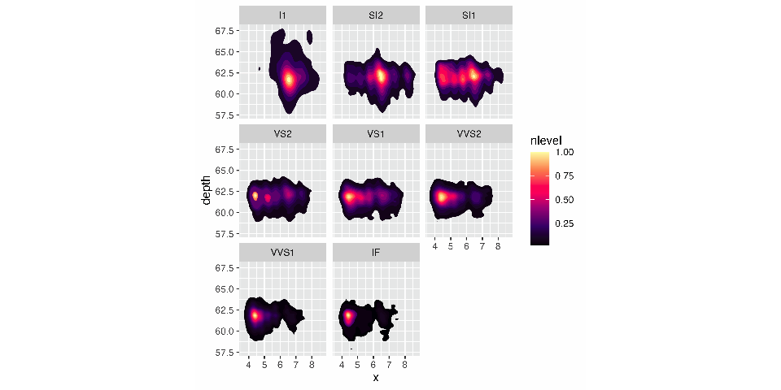
plot_gg(
ggdiamonds,
width = 5,
height = 5,
multicore = TRUE,
scale = 250,
zoom = 0.7,
theta = 10,
phi = 30,
windowsize = c(800, 800)
)
Sys.sleep(0.2)
render_snapshot(clear = TRUE)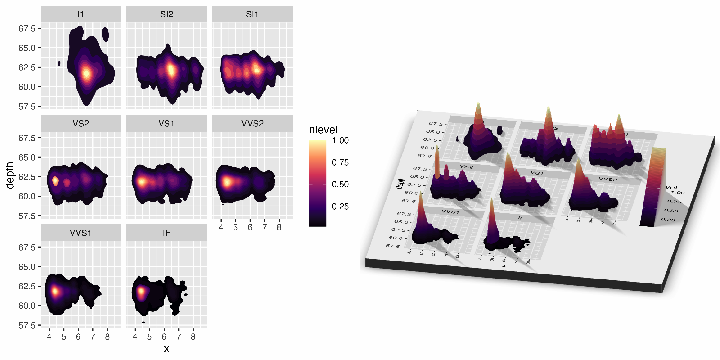
Rayshader will automatically ignore lines and other elements that should not be mapped to 3D. Here’s a contour plot of the volcano dataset.
library(reshape2)
#Contours and other lines will automatically be ignored. Here is the volcano dataset:
ggvolcano = volcano |>
melt() |>
ggplot() +
geom_tile(aes(x = Var1, y = Var2, fill = value)) +
geom_contour(aes(x = Var1, y = Var2, z = value), color = "black") +
scale_x_continuous("X", expand = c(0, 0)) +
scale_y_continuous("Y", expand = c(0, 0)) +
scale_fill_gradientn("Z", colours = terrain.colors(10)) +
coord_fixed()
par(mfrow = c(1, 2))
plot_gg(ggvolcano, width = 7, height = 4, raytrace = FALSE, preview = TRUE)## Warning: Removed 1861 rows containing missing values or values outside the scale range
## (`geom_contour()`).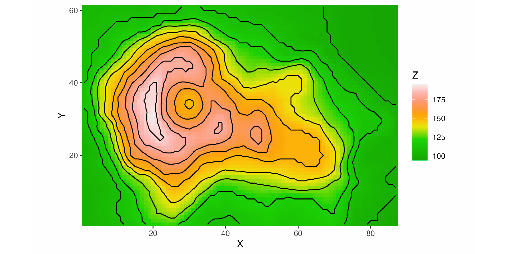
plot_gg(
ggvolcano,
multicore = TRUE,
raytrace = TRUE,
width = 7,
height = 4,
scale = 300,
windowsize = c(1400, 866),
zoom = 0.6,
phi = 30,
theta = 30
)## Warning: Removed 1861 rows containing missing values or values outside the scale range
## (`geom_contour()`).
Sys.sleep(0.2)
render_snapshot(clear = TRUE)
Rayshader also detects when the user passes the color aesthetic, and maps those values to 3D. If both color and fill are passed, however, rayshader will default to fill.
mtplot = ggplot(mtcars) +
geom_point(aes(x = mpg, y = disp, color = cyl), size = 2) +
scale_color_continuous(limits = c(0, 8))
par(mfrow = c(1, 2))
plot_gg(mtplot, width = 3.5, raytrace = FALSE, preview = TRUE)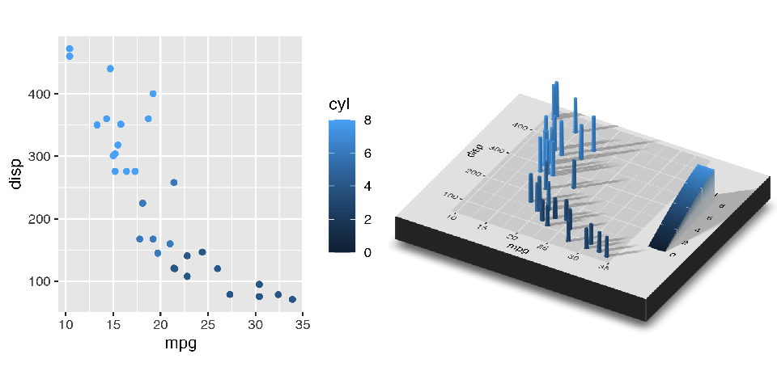
plot_gg(
mtplot,
width = 3.5,
multicore = TRUE,
windowsize = c(800, 800),
zoom = 0.85,
phi = 35,
theta = 30,
sunangle = 225
)
Sys.sleep(0.2)
render_snapshot(clear = TRUE)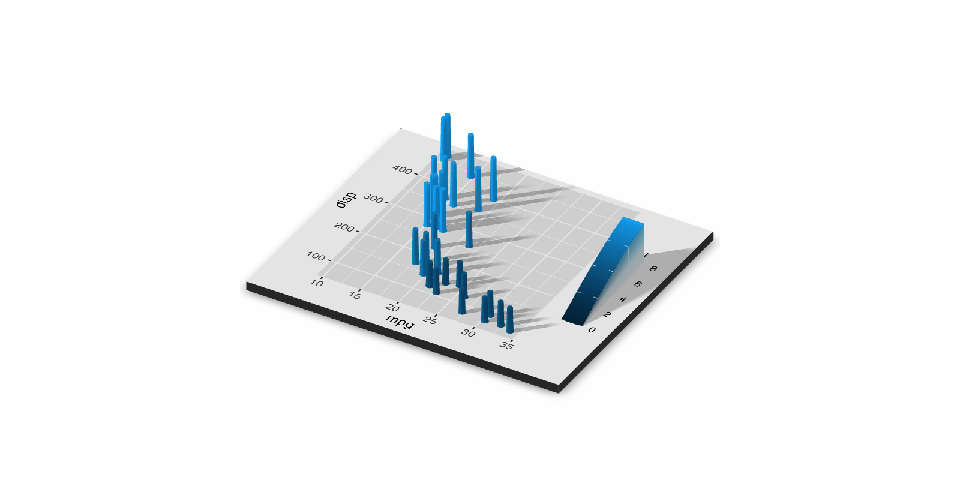
Utilize combinations of line color and fill to create different effects. Here is a terraced hexbin plot, created by mapping the line colors of the hexagons to black.
a = data.frame(x = rnorm(20000, 10, 1.9), y = rnorm(20000, 10, 1.2))
b = data.frame(x = rnorm(20000, 14.5, 1.9), y = rnorm(20000, 14.5, 1.9))
c = data.frame(x = rnorm(20000, 9.5, 1.9), y = rnorm(20000, 15.5, 1.9))
data = rbind(a, b, c)
#Lines
pp = ggplot(data, aes(x = x, y = y)) +
geom_hex(bins = 20, linewidth = 0.5, color = "black") +
scale_fill_viridis_c(option = "C")
par(mfrow = c(1, 2))
plot_gg(
pp,
width = 5,
height = 4,
scale = 300,
raytrace = FALSE,
preview = TRUE
)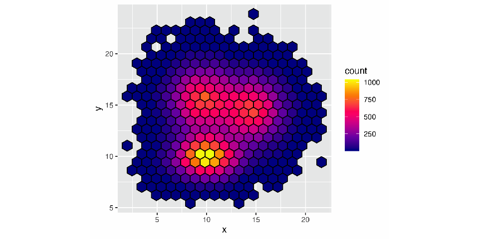
plot_gg(
pp,
width = 5,
height = 4,
scale = 300,
multicore = TRUE,
windowsize = c(1000, 800)
)
render_camera(fov = 70, zoom = 0.5, theta = 130, phi = 35)
Sys.sleep(0.2)
render_snapshot(clear = TRUE)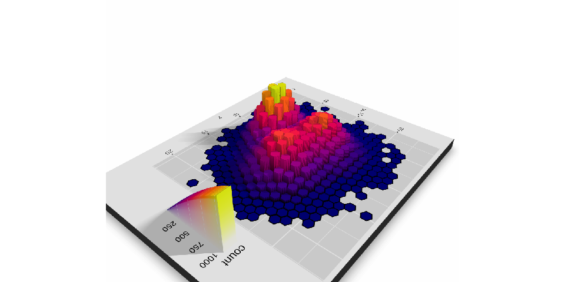
You can also use the render_depth() function to direct the viewer’s focus to a important areas in the figure.
par(mfrow = c(1, 1))
plot_gg(
pp,
width = 5,
height = 4,
scale = 300,
multicore = TRUE,
windowsize = c(1200, 960),
fov = 70,
zoom = 0.4,
theta = 330,
phi = 40
)
Sys.sleep(0.2)
render_depth(focallength = 600, focus = 1700, clear = TRUE)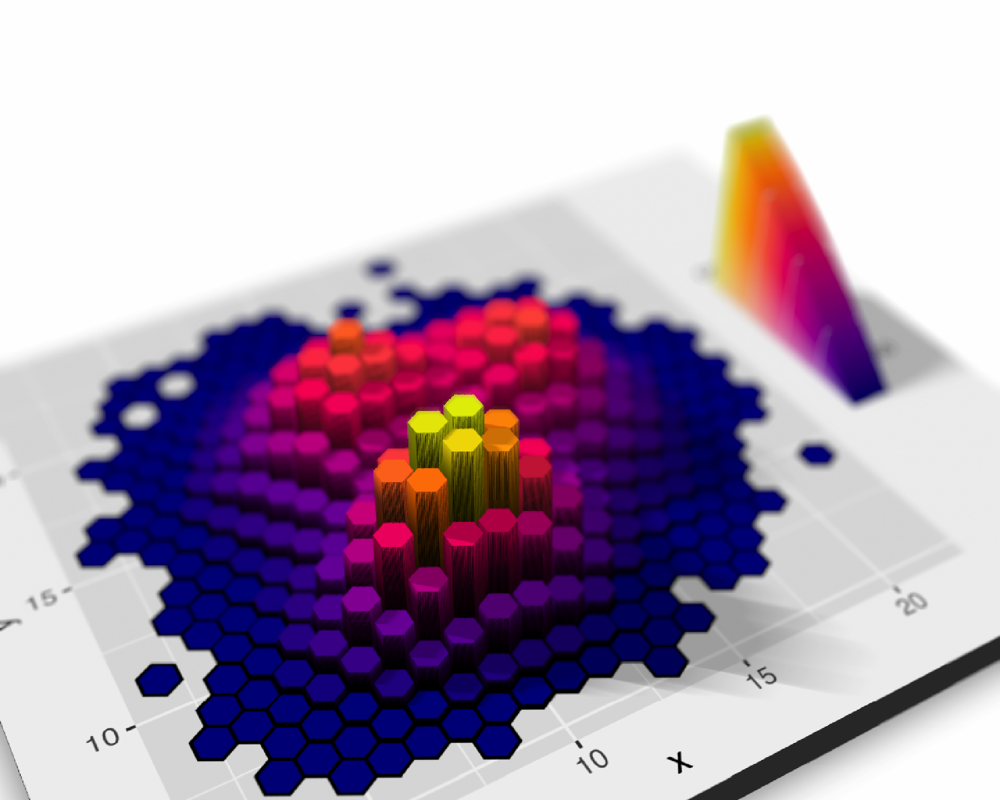
Finally, you can increase the allowable error in triangulating the model to vastly reduce the size. Here, we reduce the model to 1/100th of it’s raw (un-triangulated) size, while maintaining model quality. This can improve the performance when rendering 3D ggplots with render_highquality(), as well as improve performance on slower computers. This triangulation is powered by the {terrainmeshr} package.
Here, we make a 3D ggplot out of glass, using a triangulated model and render_highquality().
tempfilehdr = tempfile(fileext = ".hdr")
download.file("https://www.tylermw.com/data/venice_sunset_2k.hdr", tempfilehdr)
par(mfrow = c(1, 1))
plot_gg(
pp,
width = 5,
height = 4,
scale = 300,
raytrace = FALSE,
windowsize = c(1200, 960),
fov = 129,
zoom = 0.21,
theta = -25,
phi = 9,
max_error = 0.01,
verbose = TRUE,
)
Sys.sleep(0.2)
render_highquality(
samples = 16,
aperture = 30,
light = FALSE,
override_material = TRUE,
focal_distance = 1043,
material = rayrender::dielectric(attenuation = c(1, 1, 0.3) / 200),
ground_material = rayrender::diffuse(
checkercolor = "grey80",
sigma = 90,
checkerperiod = 100
),
environment_light = tempfilehdr,
)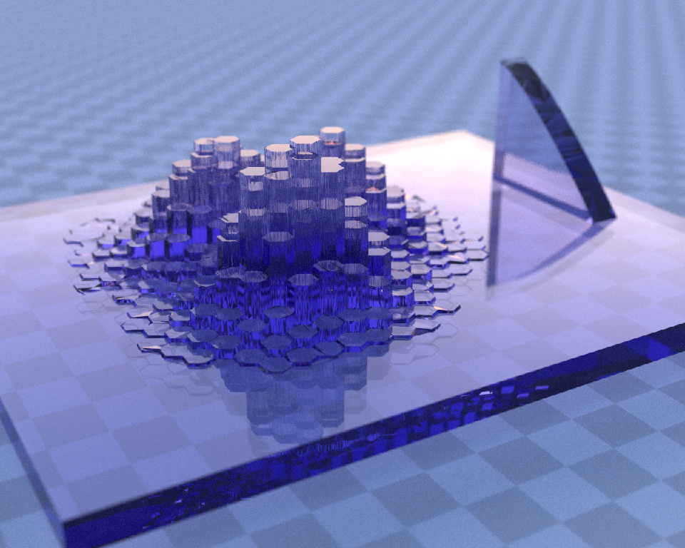